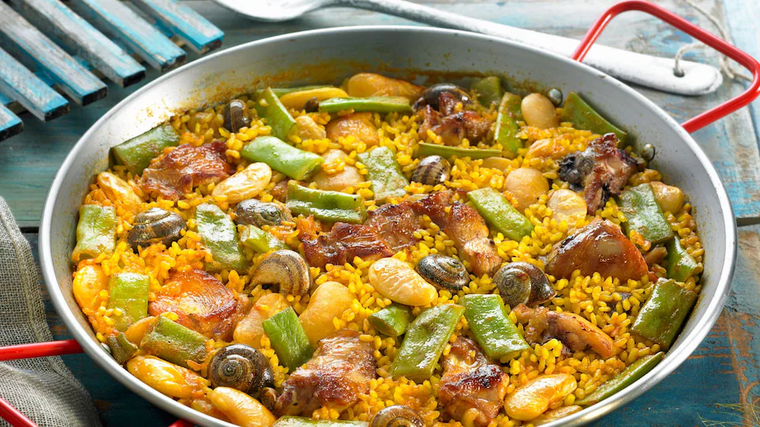
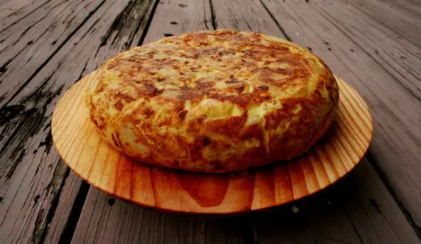
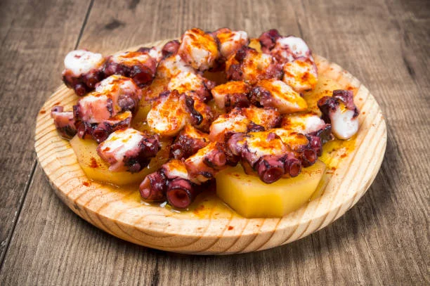
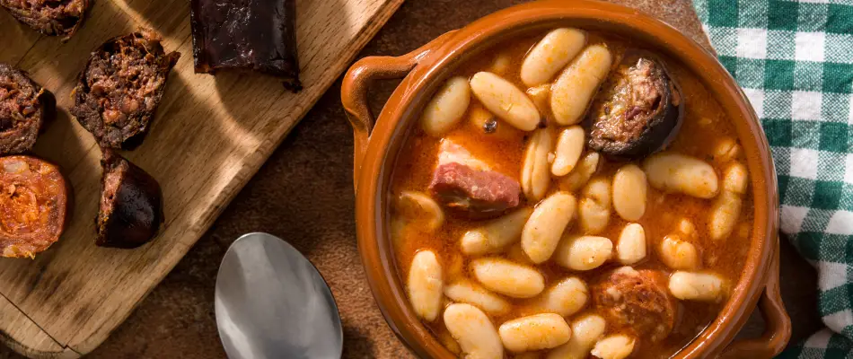
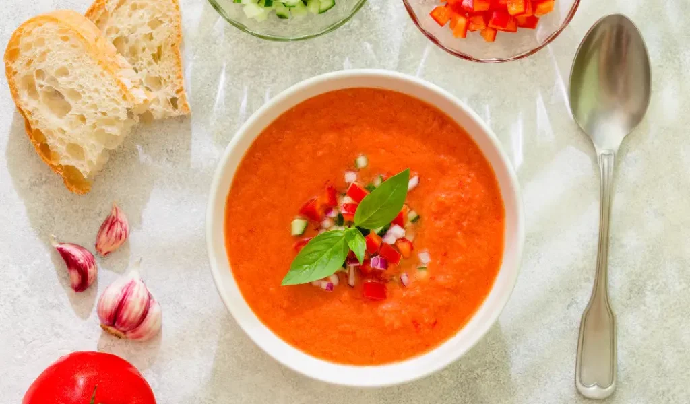
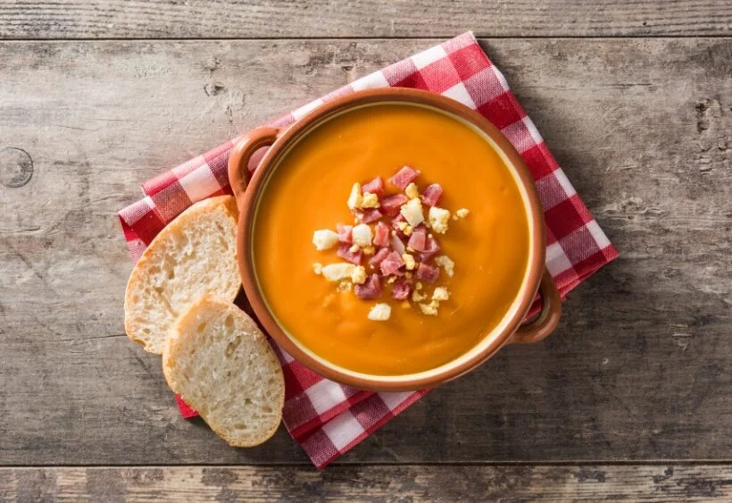

Top Comida Española: Los Platos Más Icónicos de España
1.Paella Valenciana
Origen: Valencia
Por qué es top: Es el plato español más reconocido internacionalmente.
Ingredientes clave: Arroz bomba, pollo, conejo, judías verdes, garrofó, azafrán.
Notas: La versión tradicional no lleva marisco
2.Tortilla de Patatas
Origen: Popular en toda España
Por qué es top: Sencilla, barata y universal.
Debate eterno: ¿Con cebolla o sin cebolla?.
Ingredientes: Patatas, huevo, aceite de oliva, sal.
3.Pulpo a la Gallega (Pulpo á Feira)
Origen: Galicia
Por qué es top: Su textura y sabor lo convierten en un imprescindible.
Ingredientes: Pulpo cocido, pimentón, aceite de oliva, sal gorda.
Se sirve sobre: Tabla de madera
4. Fabada Asturiana
Origen: Asturias
Por qué es top: Uno de los guisos más potentes y tradicionales del norte.
Ingredientes: Fabes, chorizo, morcilla, lacón.
Para: Invierno y días fríos.
5. Gazpacho y Salmorejo
Origen: Andalucía
Por qué son top: Son las sopas frías más famosas del país.
Diferencias:
Gazpacho: Más líquido, con pepino, pimiento, tomate, ajo, aceite de oliva, vinagre y pan.
Salmorejo: Más espeso, con tomate, pan, ajo,
 